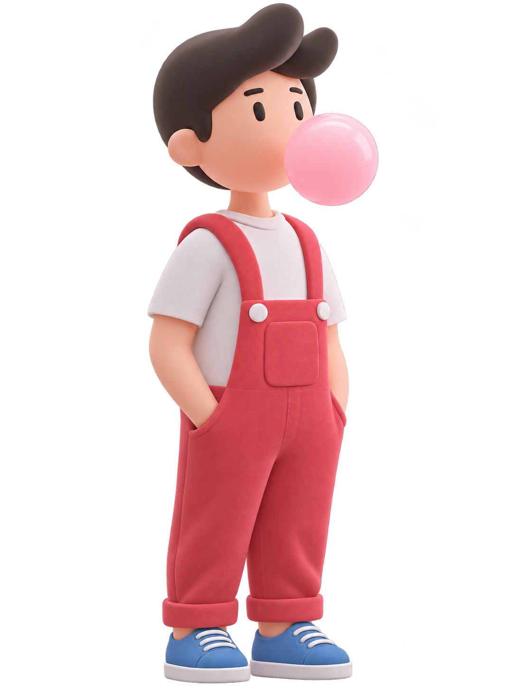

Look at Me — 재환의 배움과 기록
A LITTLE SPACE FOR BIG IDEAS
Hello! I'm Jaehwan.
코드를 만들고, 새로운 것을 배우고, 아이디어를 현실로 구현하는 공간입니다.
Learn. Create. Explore.
THINGS I CREATE
Projects.
배운 지식을 실제 결과물로 만드는 개발 프로젝트를 전시하는 공간입니다.
준비 중
프로젝트를 차근차근 채워갑니다
프로젝트 소개와 제작 과정, 사용 기술 및 회고를 차근차근 채워갈 예정입니다.
등록된 프로젝트가 아직 없습니다.
ONE NOTE AT A TIME
Study Archive.
새롭게 배운 개념과 실습 과정, 문제를 해결하며 얻은 경험을 남기는 공간입니다.
Python
기초 문법부터 자동화와 응용까지, 코드를 작성하며 배운 내용을 기록합니다.
게시물 준비 중SQL
데이터 조회와 정리를 학습 기록으로 모아갈 공간입니다.
게시물 준비 중Web Development
웹의 기본 원리부터 사용자 경험을 구현하는 방법까지 학습합니다.
게시물 준비 중AI / Machine Learning
인공지능의 원리를 이해하고 머신러닝과 딥러닝 실습 과정을 정리합니다.
게시물 준비 중Statistics
통계의 개념과 데이터 해석을 정리해 갈 공간입니다.
게시물 준비 중Data Analysis
데이터를 수집하고 분석하며 의미를 발견하는 과정을 기록합니다.
게시물 준비 중CONNECTED KNOWLEDGE
Wiki
기술에 국한되지 않고 다양한 학문의 개념과 지식을 연결하며 정리하는 공간입니다.
- 기술과 컴퓨터 과학: 원리, 용어, 문제 해결 방법
- 수학과 자연과학: 개념, 논리, 현상을 이해하는 기초
- 인문학과 사회과학: 사람과 사회를 바라보는 다양한 관점
- 학문 간 연결: 서로 다른 분야에서 발견한 공통점과 질문
ONE WORD AT A TIME
English
Grammar
영어 문법과 학습 기록을 모아갈 공간입니다. 게시물을 준비하고 있습니다.
MY CAMPUS NOTES
KAU
KAU 관련 배움과 일상을 기록할 공간입니다. 게시물을 준비하고 있습니다.
A LITTLE ABOUT ME
배우고, 만들고,
탐구합니다.
Jaehwan안녕하세요, 재환입니다. 새로운 지식을 배우고 직접 만들어 보며 이해를 넓혀갑니다.
배우고, 만들고, 탐구하는 과정에서 쌓인 생각과 지식을 기록합니다.
개발부터 다양한 학문까지, 학습 기록과 지식 위키, 프로젝트를 연결하는 재환의 개인 지식 아카이브입니다.
이 아카이브에 다양한 학문과 기술을 탐구하는 과정, 그리고 그 과정에서 만든 결과물을 꾸준히 쌓아가고자 합니다.
LET'S CONNECT
Contact.
이 공간의 코드는 GitHub에서 살펴볼 수 있습니다.